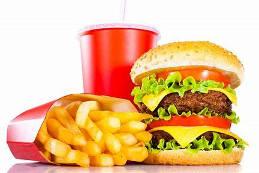

Food Industrialization
The food industry is a complex, global network of diverse businesses that supplies most of the food consumed by the world's population. Unfortunately, it is becoming industrialized to provide cheap lower-quality food to everyone. Although the price is low, consuming these foods has a high cost to your health.

In America and other countries, fast food chains are required to put nutritional facts on their food. This informs the public about the type of food they are eating. However, In more developing countries fast-food chains don't do this since the government doesn't require it. People must know what they are eating to be able to maintain a healthy diet.
A healthy diet includes.
- fruits
- vegetables
- grains
- diary

copyright & copy ; 2021 Tamaine Ottley